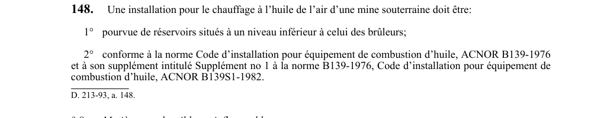

art-148-RSSM : chauffage à l'huile, réservoirs et norme
Quand l'air envoyé sous terre est réchauffé à l'huile, le montage doit empêcher l'huile de gagner les brûleurs par gravité et suivre la norme d'installation reconnue. Cette obligation vise l'employeur.
- Réservoirs placés à un niveau inférieur à celui des brûleurs.
- Conformité à la norme ACNOR B139-1976, Code d'installation pour équipement de combustion d'huile.
- Conformité également au supplément no 1 de cette norme, ACNOR B139S1-1982.
🌐 LegisQuébec · 📄 PDF officiel
Texte officiel
Une installation pour le chauffage à l’huile de l’air d’une mine souterraine doit être:
1° pourvue de réservoirs situés à un niveau inférieur à celui des brûleurs;
2° conforme à la norme Code d’installation pour équipement de combustion d’huile, ACNOR B139-1976 et à son supplément intitulé Supplément no 1 à la norme B139-1976, Code d’installation pour équipement de combustion d’huile, ACNOR B139S1-1982.
Texte de l’article 148 RSSM, extrait de la couche texte du PDF officiel (page 51), sans OCR ni retouche. La capture ci-dessous et le PDF font foi.
{kind=link}

Toucher l'image pour l'agrandir🔗 Voir art. 148 RSSM dans le PDF (page 51)
Version : texte officiel du RSSM (RLRQ c. S-2.1, r. 14), à jour au 1er mai 2024 — Éditeur officiel du Québec
Voir aussi
- art. 146 : distance moteur diesel et orifice · interdiction : à compter du 1er avril 1993, il est interdit d'installer un moteur diesel ou une chaudière à moins de 15 m (49,2 pi) d'un orifice servant de sortie d'air, à moins de 25 m (82 pi) d'un orifice servant d'entrée d'air.
- art. 147 : diesel interdit salle d'extraction · interdiction : à compter du 1er avril 1993, il est interdit d'installer un moteur diesel ou un compresseur dans la salle d'une machine d'extraction.
- art. 149 : déchets combustibles récipient métallique fermant · obligation : sous terre, dans un bâtiment couvrant un orifice à la surface d'une mine souterraine et dans la salle d'une machine d'extraction, les déchets combustibles doivent être enfermés dans un récipient métallique muni d'un couvercle rigide fixé au récipient.
- art. 150 : vidange hebdomadaire des déchets · interdiction : le récipient de déchets combustibles visé à l'article 149 doit être vidé au moins une fois par semaine et son contenu transporté à la surface, à l'exception des déchets solides pouvant être enfouis dans un remblai ; il est également interdit de laisser s'accumuler de l'huile.
- ⚖️ Loi habilitante : LSST
- ↑ Index du bloc : Soutènement
Pages qui pointent ici (5)
- art-146-RSSM : distances du diesel et de la chaudière Recueil législatif
- art-147-RSSM : diesel et compresseur interdits en salle d'extraction Recueil législatif
- art-149-RSSM : déchets combustibles en récipient métallique fermé Recueil législatif
- art-150-RSSM : vidange hebdomadaire du récipient à déchets Recueil législatif
- RSSM : Soutènement (art. 131 à 160) Recueil législatif